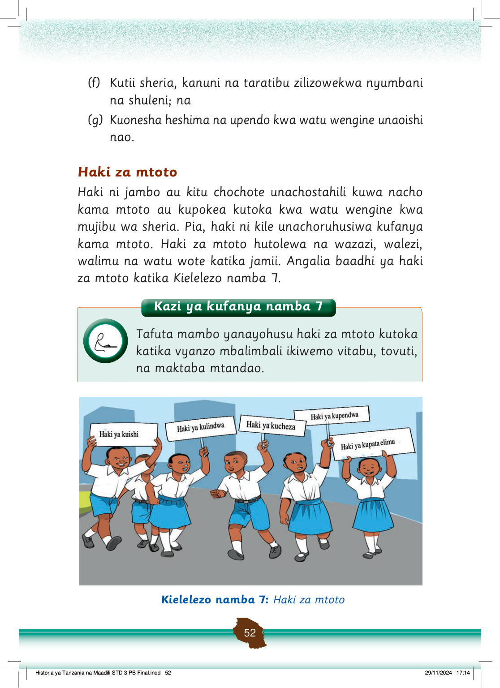

(f)
Kutii sheria, kanuni na taratibu zilizowekwa nyumbani na shuleni; na
(g)
Kuonesha heshima na upendo kwa watu wengine unaoishi nao.
Haki za mtoto
Haki ni jambo au kitu chochote unachostahili kuwa nacho kama mtoto au kupokea kutoka kwa watu wengine kwa mujibu wa sheria.
Pia, haki ni kile unachoruhusiwa kufanya kama mtoto.
Haki za mtoto hutolewa na wazazi, walezi, walimu na watu wote katika jamii.
Angalia baadhi ya haki za mtoto katika Kielelezo namba 7.
Watoto wa shule wanatembea wakiwa na mabango ya haki za mtoto. Mabango yanaonyesha haki ya kuishi, kulindwa, kucheza, kupendwa, na kupata elimu.
Kielelezo namba 7: Haki za mtoto
Historia ya Tanzania na Maadili STD 3 PB Final.indd 52
29/11/2024 17:14